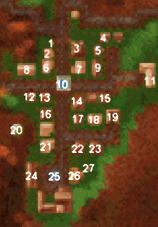

Blackshire: Darkmoor City Map

| Blackshire | |
| 1 | +50 Luck Temporarily |
| 2 | The Howling Moon (Inn) |
| 3 | Blackshire Coach and Buggy |
| 4 | Light Guild Membership (1,000 gold) |
| 5 | Dark Magic Expert (2,000 Gold) |
| 6 | Armor: Mail and Greaves |
| 7 | Outland Trading Post |
| 8 | Wolf's Den |
| 9 | Bank |
| 10 | +50 Spell points |
| 11 | Twillens House Quest to place the Statues. |
| 12 | NPC: +2 to all weapons, takes 3% gold |
| 13 | NPC: +10% gold, takes 5% gold |
| 14 | Ty's Trinkets Smugglers Guild (upstairs) |
| 15 | Smuggler's Guld Membership (50 gold) |
| 16 | Weapons: Stout Heart Staff and Spear |
| 17 | Maria Trepan Quest to destroy the Werewolf Alter |
| 18 | Adept Guild of Light (1,000 skill) |
| 19 | Adept Guild of Dark (1,000 skill) |
| 20 | Dragon Tower Quest to reset the towers |
| 21 | Master Shield Defense (10 Skill, 5,000 gold) |
| 22 | Master Sword (8 Skill, Cavelier) |
| 23 | Master Mace (8 skill, 40 might, 5,000 gold) |
| 24 | Blackshire Temple |
| 25 | +30 Magic Resistance temporary (will stone you) |
| 26 | Joanne Cravitz Quest to rescue Emmanuel from the Temple of the Snake. |
| 27 | +5 Magic resistance permanent (will stone you) |
Leave us a message mgrounds@hotmail.com